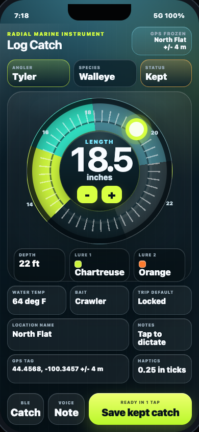
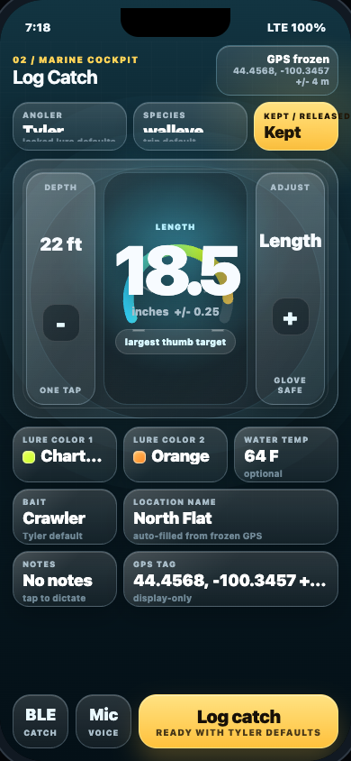
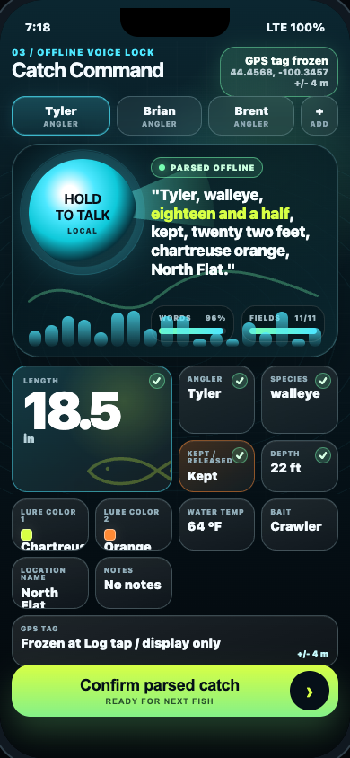
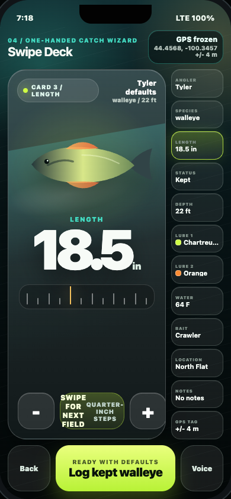
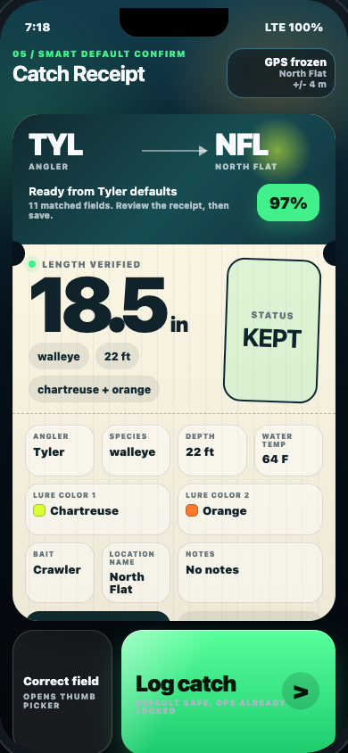
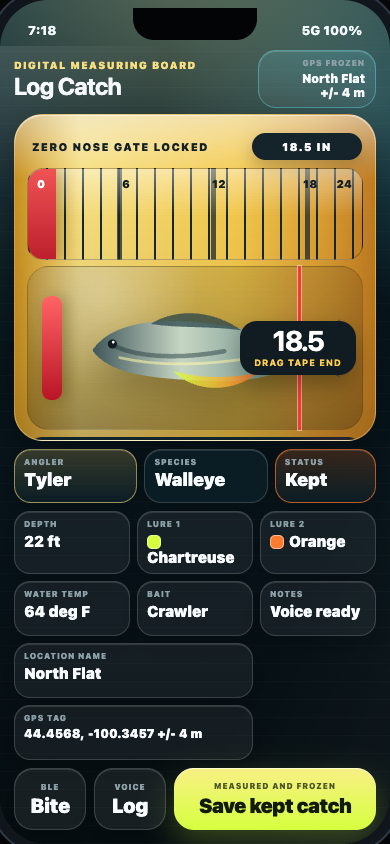
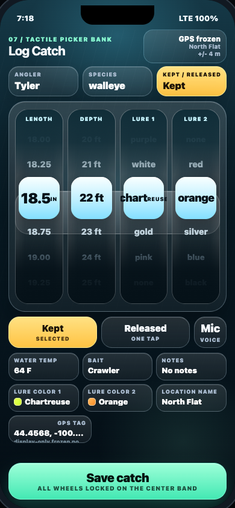
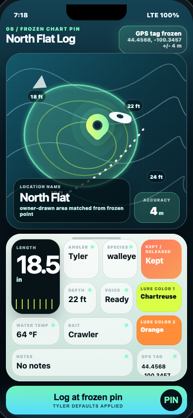
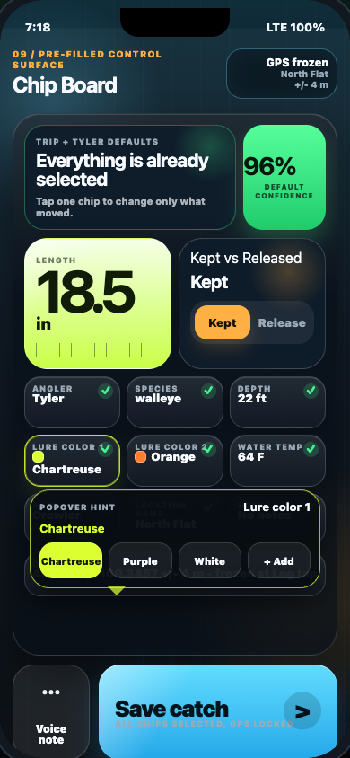
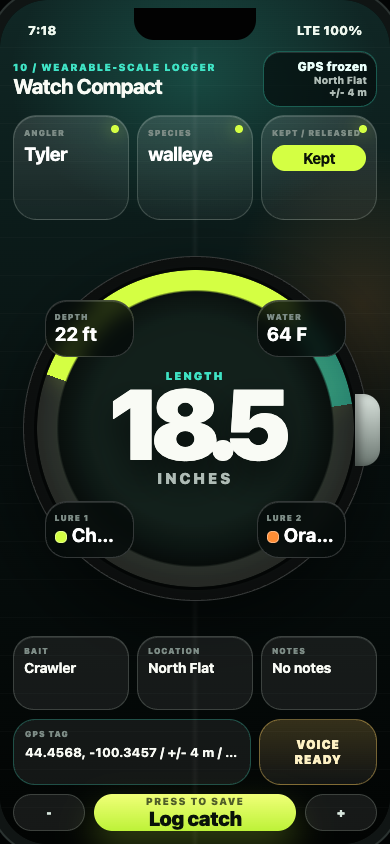

Ten standalone, offline HTML prototypes that push beyond stock forms: marine instruments, measuring boards, chart pins, catch receipts, and tactile chip surfaces. Each one is rendered in a 390 x 844 iPhone frame with every catch field visible and no in-phone scrolling.










Recommended hybrid: ship the Smart Defaults Confirm posture, use the Chip Board's always-live edit chips, and make length correction feel special with either the Radial gauge or Fish Ruler. Keep the map pin as a compact confidence module and reserve voice/BLE as a fast confirm lane, not the primary dependency.